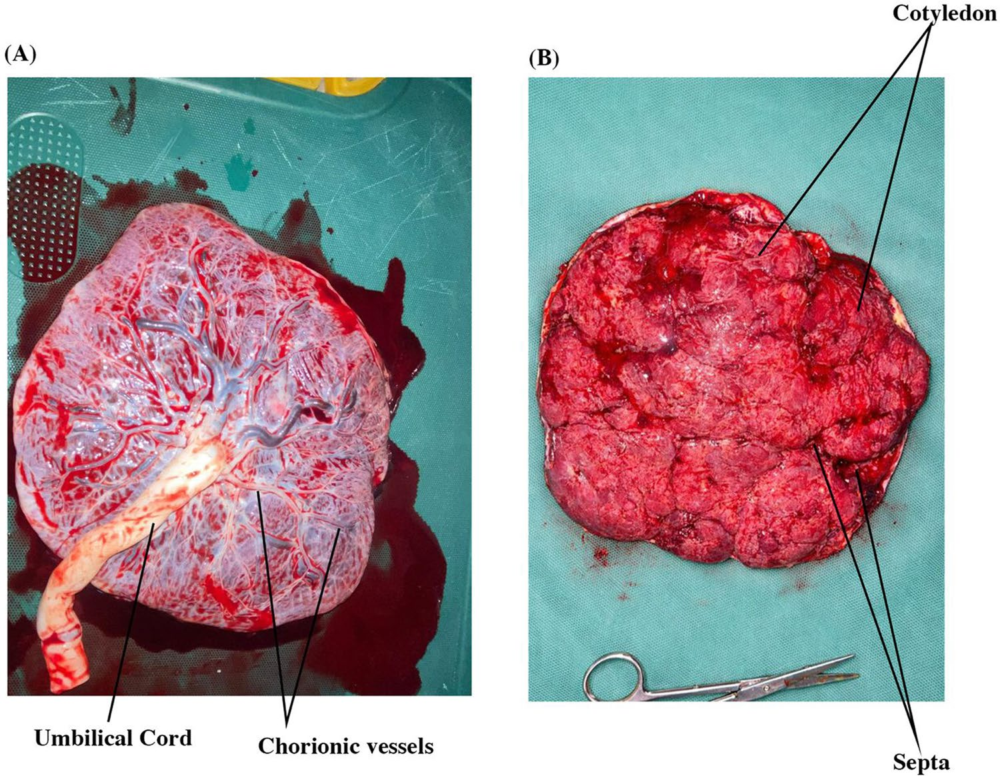

Fetal and maternal placental surfaces
The source assigns these photographs to a human placenta at term. Cord insertion and chorionic vessel branching contrast with maternal-side lobulation. The complete original plate and all author labels remain intact.

Individual donor health, age, exact gestational week, fixation, delivery method and delivery-to-photo interval are unreported. “At term” is the authors’ assignment. The two views are not a documented registered case pair. Neither the instrument nor the cloth grid is a calibrated ruler; no new scale is added. Colour is not a perfusion or oxygenation measurement.
Quaye, Appiah, Obiri, Ahenkorah and Adu-Bonsaffoh (2026), The human placenta development and anatomy, Archives of Gynecology and Obstetrics 313:234, whole Figure 6. © Authors; CC BY-NC-ND 4.0. This noncommercial educational component reproduces the complete source figure without modification. No crop, new leader, retouch, colour change, segmentation or animation. Separate page text is a source key; the image is not relicensed. Source/extraction and reuse record · Reproduction record.